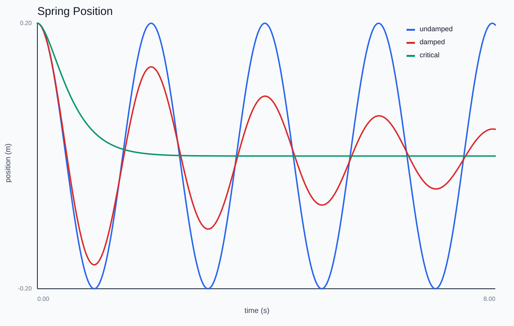
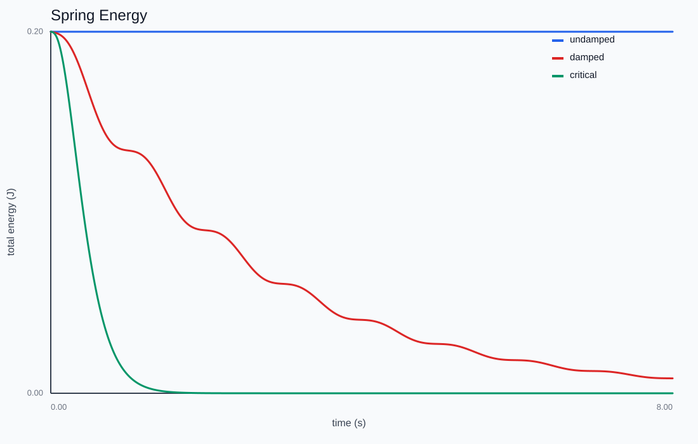

Mass on a Spring
How does a restoring force produce simple harmonic motion, and how much damping does it take to stop the oscillation?
Pluck the mass, then tune stiffness, mass, and damping. The trace is an oscilloscope of position; push the damping up to find the critical value where the oscillation just dies.

Hooke plus a dashpot
x'' = -(k/m)x - (c/m)v. Two numbers organize everything: the natural frequency \omega = \sqrt{k/m} and the damping ratio \zeta = c/(2\sqrt{mk}). \zeta = 0 is undamped, 0 \lt \zeta \lt 1 underdamped, \zeta = 1 critically damped, \zeta \gt 1 overdamped.

Critical damping
The interesting threshold is \zeta = 1: the system returns to equilibrium as fast as possible without overshooting — the regime every door-closer and galvanometer is tuned to. Sweep c from 0 through 2\sqrt{mk} and watch the phase plot collapse from a closed loop to a single inward swoop.
Reading ω off the data
With no damping there is a closed form, x(t) = x_0\cos\omega t + (v_0/\omega)\sin\omega t. Measuring the time between zero-crossings in the CSV and comparing to \sqrt{k/m} is a satisfying way to confirm the simulation is telling the truth.
This chapter is drawn from the physics-lab study notes and renders. The longer write-ups and project essays live on the blog.